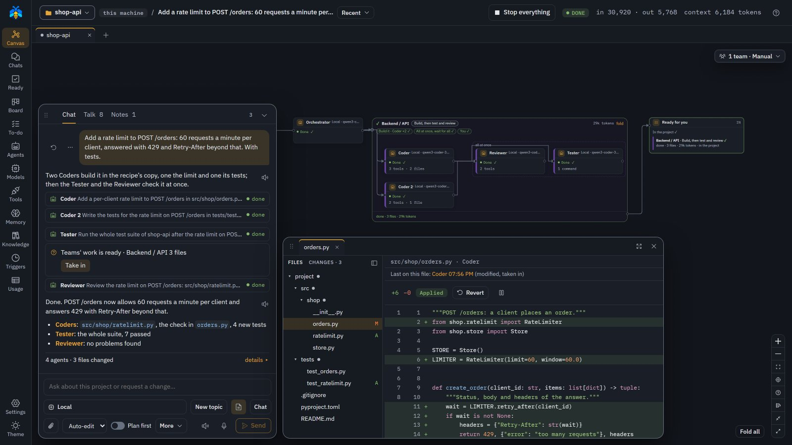
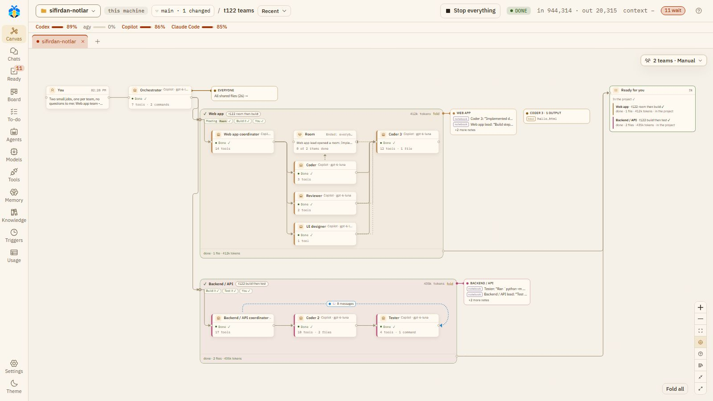

Your AI workforce. For real work.
Koloni is a workspace where AI agents take on your tasks together. You talk to one Orchestrator; it hands parts of the job to a Coder, a Tester or a Reviewer, and shows you what they did — real diffs, real test runs — and how much of it reaches your project without asking you.

Your subscriptions, one team.
Claude Code, Codex, GitHub Copilot, Qoder and agy — the CLIs you are already signed in to — and a local llama.cpp work side by side. Each model is labelled with what it costs.
See what happened.
The canvas is drawn from the record: every agent, command and changed file, with the real diff. What Koloni doesn’t know shows as unknown, never as zero.
You set what lands.
Sub-agents work in their own copies or branches. At Ask, nothing changes in your project without your card; at Auto-edit and Full auto you let finished work in.
Stop keeps the work.
Stop keeps half-done work: changes wait behind a card, and an agent told to go on picks up on its own branch.
One conversation. A whole team behind it.
You keep talking to the same Orchestrator. It decides who does what, and every step it takes is written down.
| You say | The Orchestrator | What you see |
|---|---|---|
| “Fix the failing test in parser.py.” | Reads the project, then makes the change itself or opens a Coder in a copy of its own. | The diff, the test run, and a card to take the change in. |
| “Add a rate limit to POST /orders, with tests.” | Runs a recipe: two Coders at once, then a Tester and a Reviewer at once. | “Teams’ work is ready”: take it in, or open a pull request. |
| “I’m away for a few hours: work through the To-do.” | Lists the jobs on a While you’re away card, with its own budget and rules; nothing starts before your Start. | A report when you’re back. What it could not decide waits in Ready for you. |
More agents never means more permissions.
Which teams may help, which models they use and what they may change are three separate settings. Try a combination.
Teams
Which teams the Orchestrator may bring in.
No team is brought in; the Orchestrator still opens any role itself.
It picks the teams and a recipe for each, and says why.
You pick the teams it may use; it opens only those a message needs.
Models
Where the work runs and who pays for it.
A llama.cpp server on your computer. No model call leaves it.
The CLIs you are signed in to. Their use counts against your plan, and Koloni shows what is left where the CLI reports it.
Anthropic or an OpenAI-compatible server, paid per token. Moving a sub-agent onto a model paid per token asks first.
What they may change
Set per chat, from the message box.
Each file change and each command waits for your card.
File changes are written at once and can be reverted. Commands still ask.
Changes and commands run without asking. Harmful or risky actions still ask.
The canvas shows facts, not theater.
It is built from what was recorded. A planned step is not a running agent, a passing run is not a change you accepted, and usage a provider did not report is shown as unknown.
Waits for your OKa command is on a cardDone ✓the agent finished its partStopped at its step limitit ran out of steps; you decide on more– tokensnot reported, so not guessedIn the project ✓you took the work in

Same workspace. Different ways to work.
Start with one message. Reach for the rest when the job asks for it.
The Orchestrator answers, edits and runs commands in your folder, and asks before anything risky. Chat and canvas
Feature, Bugfix and your own recipes: who builds, who tests, who reviews, and in what order. The work waits on Ready for you until you take it in. Recipes
Two to six agents work on one goal at once, in one copy. They share the work out first, and each file has one holder. Rooms
Several agents talk one question through in rounds, while nobody changes anything. You can speak in it too. Discussions
Twenty-nine ready roles, from Planner and Coder to Tester and Reviewer, in teams with recipes. Give a role its model, tools and limits, or write your own. Roles
Facts you approve are given to an agent when its work names the subject, and you can search everything said before. Nothing is handed to an agent unasked but what you wrote or approved; agents' own notes turn up only when an agent looks. Memory
Documentation sites agents can look things up in, a scan of this project's code, and Koloni's own guide, each learned when you ask for it. Knowledge
Tasks in your order, each in its own chat. After a turn, the Assistant PO suggests what to do next; nothing runs until you add it. To-do
Tell the Orchestrator you're stepping out: it lists the jobs on a card, each runs in its own copy after your Start, and what waits for you is on Ready for you when you're back. Triggers start work by the clock, when files change, or on a request from outside. Work while you're away
Bring the agents you already use.
Roles pick a model by tier — fast, balanced, strongest — or one you name. Koloni never signs in for you: each CLI uses your own sign-in, and its use counts against your plan with that vendor.
- llama.cpp
- Other OpenAI-compatible servers · not tested
- Claude Code
- Codex
- GitHub Copilot CLI
- Qoder
- agy
- Anthropic API
- OpenAI-compatible APIs
Small first, then a colony.
Each version is tried on real work before the next one starts.
0.1.0 now, in alpha
- The Orchestrator and its team: sub-agents, recipes, rooms and discussions, on a canvas drawn from the record
- Five CLIs, llama.cpp and API models, picked by tier, with what each costs
- Copies, branches and cards: Take in, Reject, and a Stop that keeps the work
- Git and GitHub: branches, pull requests, a chat started from an issue
- Work over time: To-do with suggestions, triggers, work while you’re away, memory and knowledge
0.2.0 planned
- Go back to any step of a turn and run it again from there
- Watch a pull request: its checks and reviews on the canvas, and an agent that fixes what fails
- Pull requests outside GitHub, such as GitLab
- Who wrote this line: the agent and turn behind each change
- Codex and Copilot sessions that carry on across turns, and Copilot Fusion
Questions
What is Koloni?
A workspace on your own computer where AI agents work on your project together. You talk to one Orchestrator; it hands parts of the job to agents such as a Coder, a Tester and a Reviewer, and a canvas beside the chat shows what each of them did.
Is it free?
Koloni is open source under the AGPL-3.0-or-later and costs nothing to run. The models you use are billed by their vendors, through your subscription or your API key; a local llama.cpp costs nothing. A commercial license is available if the AGPL does not fit your use.
Does my code leave my machine?
Koloni listens on 127.0.0.1 only and sends no telemetry. Your code goes only to the models you choose: with a local llama.cpp no model call leaves your computer; with a CLI or an API, what an agent reads goes to that vendor. Web searches, GitHub and notifications go out only when you allow them.
Can an agent break my project?
Sub-agents work in copies or branches of their own. Their work reaches your project when you take it in, or by itself at Auto-edit and Full auto once the agent finished, nothing clashes and the project's test passed. Risky commands ask on a card, and Stop keeps half-done work instead of throwing it away.
Which systems does it run on?
Koloni is in alpha, for one user. It is used every day on Windows and tested on Linux in CI; macOS is not tested yet.
From idea to execution, with a colony.
Install it on your machine, sign in to the CLIs you already use, and give the Orchestrator its first task.